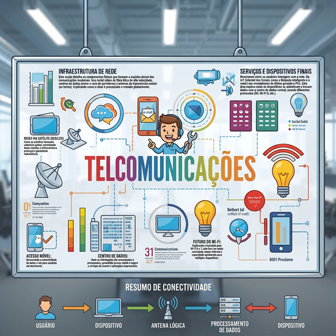

A ciência de transmitir informação à distância — do telégrafo ao 5G e à fibra óptica

▶
Assistir ao vídeo
📌 Clique na imagem para assistir ao vídeo sobre Conectividade no Brasil
🔍 O que são Telecomunicações?
É o conjunto de tecnologias e técnicas que permitem a transmissão, recepção e processamento de informações
(voz, dados, imagens, vídeo) por meio de sinais elétricos, ondas eletromagnéticas ou luz,
conectando pessoas e máquinas em qualquer lugar do mundo.
⏳ Evolução histórica
A história das telecomunicações é marcada por saltos tecnológicos que encurtaram distâncias:
1837Telégrafo elétrico (Código Morse)
1876Telefone (Bell)
1895Rádio (Marconi)
1960sSatélites (Telstar)
1980sTelefonia móvel (1G)
1990sInternet comercial (WWW)
2000sBanda larga (ADSL, Fibra)
2020s5G & IoT (Internet das Coisas)
📶 Tipos de sinais e meios de transmissão
📡 Quanto ao sinal
Analógico: Variação contínua (ex: voz humana, rádio AM/FM).
Digital: Representado por bits (0 e 1) – mais imune a ruídos, permitindo compressão e correção de erros.
🔌 Meios de transmissão
Guiados (cabeados):
Par trançado (telefonia, redes Ethernet)
Cabo coaxial (TV a cabo, internet)
Fibra óptica – maior capacidade, baixa perda, imune a interferências.
Não guiados (wireless):
Ondas de rádio (Wi-Fi, Bluetooth, rádio/TV)
Micro-ondas (links ponto-a-ponto, satélites)
Infravermelho (controles remotos, comunicação de curto alcance)
🌐 Redes de Telecomunicações
As redes podem ser classificadas por alcance e topologia:
PAN (Pessoal) – poucos metros (ex: Bluetooth).
LAN (Local) – prédio/campus (ex: rede Wi-Fi).
MAN (Metropolitana) – cidade (ex: redes de operadoras).
WAN (Ampla) – país/continente (ex: internet, backbones).
🌍 Curiosidade: Os cabos submarinos de fibra óptica transportam cerca de 99% dos dados intercontinentais, com latência menor do que satélites.
⚡ Tecnologias que movem o mundo hoje
📱 5G
Redes móveis de quinta geração oferecem baixa latência (∼1 ms), alta velocidade (até 10 Gbps) e suporte massivo a dispositivos conectados, viabilizando carros autônomos, cidades inteligentes e realidade aumentada.
🔦 Fibra óptica (FTTH)
Fiber-to-the-Home leva a fibra até a residência, garantindo velocidades simétricas (upload/download) e estabilidade. É a base da internet de alta performance.
📡 Satélites de baixa órbita (LEO)
Constelações como Starlink e OneWeb prometem internet de baixa latência em áreas remotas, com milhares de satélites próximos à Terra (∼500 km).
📊 Comparação entre meios de transmissão
Meio
Velocidade típica
Distância
Vantagem
Desvantagem
Fibra óptica
1 – 800 Gbps
Centenas de km
Alta capacidade, imunidade
Custo de instalação
Cabo coaxial
100 Mbps – 1 Gbps
~100 m
Boa relação custo/benefício
Mais suscetível a ruídos
Par trançado
10 Mbps – 10 Gbps
~100 m
Barato, fácil de instalar
Perda em longas distâncias
Wi-Fi 6
~1 – 10 Gbps
~50 m
Mobilidade, fácil acesso
Interferência, segurança
5G
até 10 Gbps
~1 km (célula)
Baixa latência, mobilidade
Infraestrutura densa
🚀 Desafios e o futuro
Capacidade: O tráfego global de dados cresce exponencialmente (vídeo, IoT, IA).
Segurança e privacidade: Criptografia e resiliência a ataques são essenciais.
Sustentabilidade: Redes mais eficientes energeticamente e uso de materiais recicláveis.
🔮 Tendências:6G (já em pesquisa) trará comunicações holográficas, integração com sensores e inteligência artificial embarcada. A fibra óptica continuará sendo o pilar das redes troncais, enquanto o espaço ganhará protagonismo com satélites e comunicações quânticas.
💡 A óptica nas telecomunicações
Como vimos, a fibra óptica é o meio mais avançado para transmissão de dados.
Seu princípio é a reflexão interna total: a luz viaja pelo núcleo da fibra
(geralmente sílica) e é refletida pela casca, percorrendo longas distâncias com mínima perda.
Além da fibra, a fotônica também atua em amplificadores ópticos,
comutadores e multiplexadores por comprimento de onda (WDM), que permitem transmitir
vários canais simultaneamente na mesma fibra, multiplicando a capacidade.